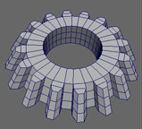

每次创建齿轮基本体时，便创建 polyGear 节点。
- 边(Sides)
- 确定围绕齿轮中心的相同切片数量。
- 半径(Radius)
- 确定从齿轮中心到最远顶点测量的齿轮大小。
- 内部半径(Internal Radius)
- 确定在齿轮中心处从该中心到最远顶点测量的洞大小。
- 高度(Height)
- 确定齿轮的垂直大小。
- 细分(Subdivisions)数
- 确定沿高度细分齿轮的次数。
- 齿轮间距(Gear Spacing)
- 确定齿轮的每个挤出“齿”的水平长度。
- 齿轮偏移(Gear Offset)
- 确定齿轮的每个挤出“齿”的垂直长度。
- 齿轮尖端(Gear Tip)
- 确定齿轮的挤出“齿”在尖端的锥化程度。
- 齿轮中间(Gear Middle)
- 确定齿轮的挤出“齿”在中点的锥化程度。
- 扭曲(Twist)
- 沿齿轮的高度添加方向扭曲。
- 锥化百分比(Taper Percentage)
- 确定整个齿轮沿其高度的锥化程度。